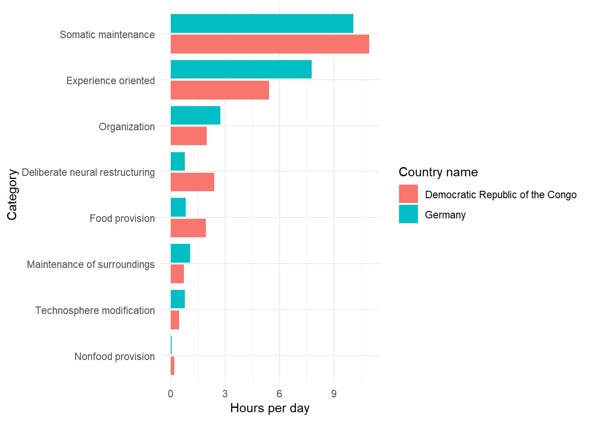

# Load packages
library(dplyr)
library(janitor)
library(tidyr)
library(ggplot2)
library(forcats)
library(knitr)
# Reading the data in
all_countries <- readr::read_csv('https://raw.githubusercontent.com/rfordatascience/tidytuesday/master/data/2023/2023-09-12/all_countries.csv') |>
clean_names()
country_regions <- readr::read_csv('https://raw.githubusercontent.com/rfordatascience/tidytuesday/master/data/2023/2023-09-12/country_regions.csv') |>
clean_names()
# Set graph theme
theme_set(theme_minimal())Overview
Given the Global Human Day data from TidyTuesday, I will visualize what the average days look like for the two most different countries.
Setup
First I will call the necessary packages and read in the data, found at the tidytuesday Github repository.
Initial thoughts
Looking at the data in the two data frames, my first thoughts are that I will join them together so that I can get country_name into the all_countries data set.
all_countries |>
head(5) |>
kable()| category | subcategory | country_iso3 | region_code | population | hours_per_day_combined | uncertainty_combined |
|---|---|---|---|---|---|---|
| Food provision | Food preparation | ABW | AM_C | 101665 | 1.47 | 0.2376303 |
| Food provision | Food growth & collection | ABW | AM_C | 101665 | 0.17 | 0.0268798 |
| Food provision | Food processing | ABW | AM_C | 101665 | 0.00 | 0.0075265 |
| Nonfood provision | Materials | ABW | AM_C | 101665 | 0.03 | 0.0020716 |
| Nonfood provision | Energy | ABW | AM_C | 101665 | 0.05 | 0.0035968 |
country_regions |>
head(5) |>
kable()| region_code | region_name | country_name | m49_code | country_iso2 | country_iso3 | alt_country_name | alt_country_name1 | alt_country_name2 | alt_country_name3 | alt_country_name4 | alt_country_name5 | alt_country_name6 | other_code1 | other_code2 |
|---|---|---|---|---|---|---|---|---|---|---|---|---|---|---|
| AF_N | Northern Africa | Algeria | 12 | DZ | DZA | Algeria | People’s Democratic Republic of Algeria | NA | NA | NA | NA | NA | NA | NA |
| AF_N | Northern Africa | Egypt | 818 | EG | EGY | Egypt | Arab Republic of Egypt | NA | NA | NA | NA | NA | NA | NA |
| AF_N | Northern Africa | Libya | 434 | LY | LBY | Libya | State of Libya | NA | NA | NA | NA | NA | NA | NA |
| AF_N | Northern Africa | Morocco | 504 | MA | MAR | Morocco | Kingdom of Morocco | NA | NA | NA | NA | NA | NA | NA |
| AF_N | Northern Africa | Sudan | 729 | SD | SDN | Sudan | Republic of the Sudan | The Sudan | NA | NA | NA | NA | NA | NA |
I also want to peek at the different options for categories and subcategories:
all_countries |>
distinct(category, subcategory) |>
arrange_all() |>
kable()| category | subcategory |
|---|---|
| Deliberate neural restructuring | Religious practice |
| Deliberate neural restructuring | Schooling & research |
| Experience oriented | Active recreation |
| Experience oriented | Interactive |
| Experience oriented | Meals |
| Experience oriented | Passive |
| Experience oriented | Social |
| Food provision | Food growth & collection |
| Food provision | Food preparation |
| Food provision | Food processing |
| Maintenance of surroundings | Inhabited environment |
| Maintenance of surroundings | Waste management |
| Nonfood provision | Energy |
| Nonfood provision | Materials |
| Organization | Allocation |
| Organization | Human transportation |
| Organization | Material transportation |
| Somatic maintenance | Health care |
| Somatic maintenance | Hygiene & grooming |
| Somatic maintenance | Physical child care |
| Somatic maintenance | Sleep & bedrest |
| Technosphere modification | Artifacts |
| Technosphere modification | Buildings |
| Technosphere modification | Infrastructure |
Joining the two data sets
The below left_join will add country_name to the all_countries data set. I’m also going to get rid of some variables I won’t be needing and arrange the data set.
all_countries <- all_countries |>
left_join(
country_regions |>
select(country_iso3,
country_name),
by = "country_iso3") |>
select(country_name,
category,
subcategory,
hours_per_day_combined) |>
arrange(country_name,
category,
subcategory)
all_countries |>
head(5) |>
kable()| country_name | category | subcategory | hours_per_day_combined |
|---|---|---|---|
| Afghanistan | Deliberate neural restructuring | Religious practice | 0.29 |
| Afghanistan | Deliberate neural restructuring | Schooling & research | 1.33 |
| Afghanistan | Experience oriented | Active recreation | 0.23 |
| Afghanistan | Experience oriented | Interactive | 0.62 |
| Afghanistan | Experience oriented | Meals | 1.62 |
Add an hour variable for the category
The hours_per_day_combined variable goes with the subcategory variable. I am going to create an hour variable for the category variable.
all_countries <- all_countries |>
rename(subcategory_hours_per_day = hours_per_day_combined) |>
group_by(country_name, category) |>
mutate(category_hours_per_day = sum(subcategory_hours_per_day),
.after = subcategory) |>
ungroup()
all_countries |>
head(10) |>
kable()| country_name | category | subcategory | category_hours_per_day | subcategory_hours_per_day |
|---|---|---|---|---|
| Afghanistan | Deliberate neural restructuring | Religious practice | 1.62 | 0.29 |
| Afghanistan | Deliberate neural restructuring | Schooling & research | 1.62 | 1.33 |
| Afghanistan | Experience oriented | Active recreation | 6.32 | 0.23 |
| Afghanistan | Experience oriented | Interactive | 6.32 | 0.62 |
| Afghanistan | Experience oriented | Meals | 6.32 | 1.62 |
| Afghanistan | Experience oriented | Passive | 6.32 | 2.05 |
| Afghanistan | Experience oriented | Social | 6.32 | 1.80 |
| Afghanistan | Food provision | Food growth & collection | 2.12 | 0.88 |
| Afghanistan | Food provision | Food preparation | 2.12 | 1.14 |
| Afghanistan | Food provision | Food processing | 2.12 | 0.10 |
Visualize the two most different countries
Which two countries have the most different days? And how do they compare?
Modifying this Stackoverflow topic, I am going to find the maximum pairwise difference between two countries and plot those two countries’ days.
country_pair_diff <- all_countries |>
distinct(country_name,
category,
category_hours_per_day) |>
group_by(category) |>
reframe(result = combn(seq_along(category_hours_per_day), 2, function(i)
list(difference = diff(category_hours_per_day[i]), #The difference
country_pair = paste0(country_name[i], collapse = '-')), # The pairs
simplify = FALSE)) |>
unnest_wider(result) |>
mutate(abs_difference = abs(difference)) |>
group_by(country_pair) |>
mutate(total_diff_country_pair = sum(abs_difference)) |>
ungroup()
country_pair_diff |>
arrange(country_pair) |>
head(10) |>
kable()| category | difference | country_pair | abs_difference | total_diff_country_pair |
|---|---|---|---|---|
| Deliberate neural restructuring | -0.52 | Afghanistan-Albania | 0.52 | 2.15 |
| Experience oriented | 0.53 | Afghanistan-Albania | 0.53 | 2.15 |
| Food provision | -0.16 | Afghanistan-Albania | 0.16 | 2.15 |
| Maintenance of surroundings | 0.16 | Afghanistan-Albania | 0.16 | 2.15 |
| Nonfood provision | 0.03 | Afghanistan-Albania | 0.03 | 2.15 |
| Organization | 0.09 | Afghanistan-Albania | 0.09 | 2.15 |
| Somatic maintenance | -0.40 | Afghanistan-Albania | 0.40 | 2.15 |
| Technosphere modification | 0.26 | Afghanistan-Albania | 0.26 | 2.15 |
| Deliberate neural restructuring | -0.20 | Afghanistan-Algeria | 0.20 | 2.46 |
| Experience oriented | 1.07 | Afghanistan-Algeria | 1.07 | 2.46 |
Now I can find the two most different countries. They will have the largest total_diff_country_pair.
country_pair_diff |>
distinct(country_pair,
total_diff_country_pair) |>
arrange(-total_diff_country_pair) |>
head(20) |>
kable()| country_pair | total_diff_country_pair |
|---|---|
| Democratic Republic of the Congo-Germany | 7.53 |
| Angola-Germany | 7.42 |
| Cameroon-Germany | 7.42 |
| Central African Republic-Germany | 7.42 |
| Chad-Germany | 7.42 |
| Equatorial Guinea-Germany | 7.42 |
| Gabon-Germany | 7.42 |
| Germany-Sao Tome and Principe | 7.42 |
| Bhutan-Germany | 7.06 |
| Democratic Republic of the Congo-Japan | 6.97 |
| Democratic Republic of the Congo-Switzerland | 6.95 |
| Democratic Republic of the Congo-Sweden | 6.91 |
| Democratic Republic of the Congo-Netherlands | 6.89 |
| Angola-Japan | 6.86 |
| Cameroon-Japan | 6.86 |
| Central African Republic-Japan | 6.86 |
| Chad-Japan | 6.86 |
| Equatorial Guinea-Japan | 6.86 |
| Gabon-Japan | 6.86 |
| Japan-Sao Tome and Principe | 6.86 |
Graphing the two most different countries
So, with our knowledge now that the DRC and Germany have the most different days, let’s plot the difference to see what it looks like:
all_countries |>
filter(country_name %in% c("Democratic Republic of the Congo",
"Germany")) |>
distinct(country_name, category, .keep_all = TRUE) |>
mutate(category = category |>
as.factor() |>
fct_reorder(category_hours_per_day)) |>
ggplot() +
geom_col(aes(x = category,
y = category_hours_per_day,
fill = country_name),
position = "dodge2") +
labs(x = "Category",
y = "Hours per day",
fill = "Country name") +
coord_flip()
It looks like the DRC spends more time on Deliberate neural restructuring, which includes activities like religious practice and schooling and research, whereas Germany spends more time on Experience oriented activities, like active recreation, interactive, social, passive, and meals.
Session info
─ Session info ───────────────────────────────────────────────────────────────
setting value
version R version 4.3.0 (2023-04-21 ucrt)
os Windows 11 x64 (build 22000)
system x86_64, mingw32
ui RTerm
language (EN)
collate English_Canada.utf8
ctype English_Canada.utf8
tz Pacific/Honolulu
date 2023-09-21
pandoc 3.1.1 @ C:/Program Files/RStudio/resources/app/bin/quarto/bin/tools/ (via rmarkdown)
─ Packages ───────────────────────────────────────────────────────────────────
package * version date (UTC) lib source
bit 4.0.5 2022-11-15 [1] CRAN (R 4.3.0)
bit64 4.0.5 2020-08-30 [1] CRAN (R 4.3.0)
cachem 1.0.8 2023-05-01 [1] CRAN (R 4.3.0)
callr 3.7.3 2022-11-02 [1] CRAN (R 4.3.0)
cli 3.6.1 2023-03-23 [1] CRAN (R 4.3.0)
codetools 0.2-19 2023-02-01 [2] CRAN (R 4.3.0)
colorspace 2.1-0 2023-01-23 [1] CRAN (R 4.3.0)
crayon 1.5.2 2022-09-29 [1] CRAN (R 4.3.0)
curl 5.0.0 2023-01-12 [1] CRAN (R 4.3.0)
devtools * 2.4.5 2022-10-11 [1] CRAN (R 4.3.1)
digest 0.6.31 2022-12-11 [1] CRAN (R 4.3.0)
dplyr * 1.1.2 2023-04-20 [1] CRAN (R 4.3.0)
ellipsis 0.3.2 2021-04-29 [1] CRAN (R 4.3.0)
evaluate 0.20 2023-01-17 [1] CRAN (R 4.3.0)
fansi 1.0.4 2023-01-22 [1] CRAN (R 4.3.0)
farver 2.1.1 2022-07-06 [1] CRAN (R 4.3.0)
fastmap 1.1.1 2023-02-24 [1] CRAN (R 4.3.0)
forcats * 1.0.0 2023-01-29 [1] CRAN (R 4.3.0)
fs 1.6.2 2023-04-25 [1] CRAN (R 4.3.0)
generics 0.1.3 2022-07-05 [1] CRAN (R 4.3.0)
ggplot2 * 3.4.3 2023-08-14 [1] CRAN (R 4.3.1)
glue 1.6.2 2022-02-24 [1] CRAN (R 4.3.0)
gtable 0.3.3 2023-03-21 [1] CRAN (R 4.3.0)
here * 1.0.1 2020-12-13 [1] CRAN (R 4.3.0)
hms 1.1.3 2023-03-21 [1] CRAN (R 4.3.0)
htmltools 0.5.5 2023-03-23 [1] CRAN (R 4.3.0)
htmlwidgets 1.6.2 2023-03-17 [1] CRAN (R 4.3.0)
httpuv 1.6.11 2023-05-11 [1] CRAN (R 4.3.1)
janitor * 2.2.0 2023-02-02 [1] CRAN (R 4.3.0)
jsonlite 1.8.4 2022-12-06 [1] CRAN (R 4.3.0)
knitr * 1.42 2023-01-25 [1] CRAN (R 4.3.0)
labeling 0.4.2 2020-10-20 [1] CRAN (R 4.3.0)
later 1.3.1 2023-05-02 [1] CRAN (R 4.3.0)
lifecycle 1.0.3 2022-10-07 [1] CRAN (R 4.3.0)
lubridate 1.9.2 2023-02-10 [1] CRAN (R 4.3.0)
magrittr 2.0.3 2022-03-30 [1] CRAN (R 4.3.0)
memoise 2.0.1 2021-11-26 [1] CRAN (R 4.3.0)
mime 0.12 2021-09-28 [1] CRAN (R 4.3.0)
miniUI 0.1.1.1 2018-05-18 [1] CRAN (R 4.3.0)
munsell 0.5.0 2018-06-12 [1] CRAN (R 4.3.0)
pillar 1.9.0 2023-03-22 [1] CRAN (R 4.3.0)
pkgbuild 1.4.0 2022-11-27 [1] CRAN (R 4.3.0)
pkgconfig 2.0.3 2019-09-22 [1] CRAN (R 4.3.0)
pkgload 1.3.2 2022-11-16 [1] CRAN (R 4.3.0)
prettyunits 1.1.1 2020-01-24 [1] CRAN (R 4.3.0)
processx 3.8.1 2023-04-18 [1] CRAN (R 4.3.0)
profvis 0.3.8 2023-05-02 [1] CRAN (R 4.3.0)
promises 1.2.0.1 2021-02-11 [1] CRAN (R 4.3.0)
ps 1.7.5 2023-04-18 [1] CRAN (R 4.3.0)
purrr 1.0.1 2023-01-10 [1] CRAN (R 4.3.0)
R6 2.5.1 2021-08-19 [1] CRAN (R 4.3.0)
Rcpp 1.0.10 2023-01-22 [1] CRAN (R 4.3.0)
readr 2.1.4 2023-02-10 [1] CRAN (R 4.3.0)
remotes 2.4.2 2021-11-30 [1] CRAN (R 4.3.0)
rlang 1.1.1 2023-04-28 [1] CRAN (R 4.3.0)
rmarkdown 2.21 2023-03-26 [1] CRAN (R 4.3.0)
rprojroot 2.0.3 2022-04-02 [1] CRAN (R 4.3.0)
rstudioapi 0.15.0 2023-07-07 [1] CRAN (R 4.3.1)
scales 1.2.1 2022-08-20 [1] CRAN (R 4.3.1)
sessioninfo 1.2.2 2021-12-06 [1] CRAN (R 4.3.0)
shiny 1.7.4 2022-12-15 [1] CRAN (R 4.3.0)
snakecase 0.11.0 2019-05-25 [1] CRAN (R 4.3.0)
stringi 1.7.12 2023-01-11 [1] CRAN (R 4.3.0)
stringr 1.5.0 2022-12-02 [1] CRAN (R 4.3.0)
tibble 3.2.1 2023-03-20 [1] CRAN (R 4.3.0)
tidyr * 1.3.0 2023-01-24 [1] CRAN (R 4.3.0)
tidyselect 1.2.0 2022-10-10 [1] CRAN (R 4.3.0)
timechange 0.2.0 2023-01-11 [1] CRAN (R 4.3.0)
tzdb 0.3.0 2022-03-28 [1] CRAN (R 4.3.0)
urlchecker 1.0.1 2021-11-30 [1] CRAN (R 4.3.0)
usethis * 2.2.2 2023-07-06 [1] CRAN (R 4.3.1)
utf8 1.2.3 2023-01-31 [1] CRAN (R 4.3.0)
vctrs 0.6.2 2023-04-19 [1] CRAN (R 4.3.0)
vroom 1.6.3 2023-04-28 [1] CRAN (R 4.3.0)
withr 2.5.0 2022-03-03 [1] CRAN (R 4.3.0)
xfun 0.39 2023-04-20 [1] CRAN (R 4.3.0)
xtable 1.8-4 2019-04-21 [1] CRAN (R 4.3.0)
yaml 2.3.7 2023-01-23 [1] CRAN (R 4.3.0)
[1] C:/Users/sharl/AppData/Local/R/win-library/4.3
[2] C:/Program Files/R/R-4.3.0/library
──────────────────────────────────────────────────────────────────────────────